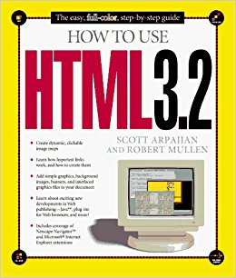

| HTML | HTML 2.0 | HTML 3.2 | HTML 4.01 | HTML 5 |
|---|---|---|---|---|
|  |  |
 |
||
| Año de lanzamiento: 1991 | Año de lanzamiento: 1995 | Año de lanzamiento: 1997 | Año de lanzamiento: 1999 | Año de lanzamiento: 2014 |
| Mejoras: | Mejoras: | Mejoras: | Mejoras: | Mejoras: |
Fuente: Elaboración propia (2018). |
Introducción
El lenguaje de marcas de hipertexto,mas conocido por sus siglas en ingles (HTML),en si es el lenguaje responsable que ha sido el gran salto para que incrementasé la popularidad de la internet. HTML, surgió en la decada de los años 90's, con el objetivo de implementar texto en la web, es decir algo como agregar un "< p >...< / p >" que se despliegasé en la web. Sin embargo, a través de sus recorridos por el viaje del tiempo, este lenguaje se fue mejorando e implementando hasta tal punto de llegar a una version 5.0 y poder ser mas interactivo con el usuario, haciendo en sí que se pudiese dibujar, reproducir videos, barras de navegación y entre muchas otras novedades en la web.
Contenido
Erase una vez, un lenguaje Html que era utlizado en el CERN(Organizacíon Europea para la Investigación Nuclear), para transmitir solamente texto dentro de la web, quien a su vez conoció a su creador: Tim Berners-Lee, quien en 1991, desarrollo el lenguaje en el cual esta pagina esta siendo creada o maquetizada en otras palabras. Durante esa primera version, ya existia el concepto de las etiquetas principales del lenguaje como:- etiqueta HTML
- Head
- Body
- < p >< / p >
- Un < p > sin contenido
- Un salto de linea < br >
- Los encabezados h1-h6
- Implementación de urls
- Aparción de < img >
- Script
- Style
- Meta
- Link
- las hojas de estilos .css
- Formularios, tales como:
- Implementación de listas
Conclusión.
HTML, no es un lenguaje solitario, ya que como podemos observar en esta página puede obtener diferentes funcionalidades que pueden darnos la apariencia de que una pagina web sea una aplicacion.
Es imprecendible decir cuales serán las proximas características que tomara la siguiente versión de este lenguaje,ya que cada versión tiene el objetivo de innovar la manera en que la web pueda visualizarse y es por ello que es casi imprencidible actualmente creerse que este lenguaje pudo haber iniciado con la implementación de un solo texto.
.